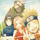
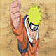
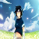
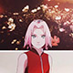

火影忍者
故事成功地将原本隐藏在黑暗中，用世界上最强大的毅力和最艰辛的努力去 做最密不可宣和隐讳残酷的事情的忍者，描绘成了太阳下最值得骄傲最 光明无限的职业。在岸本齐史笔下的忍者世界中，每一位年轻的忍者都 在开拓着属于自己的忍道。
为实现梦想，和守护伙伴们的羁绊，鸣人不断修炼，作为木叶“三忍” 之一自来也的弟子，在追寻梦想的过程中不断突破自我，贯彻了自身的忍道， 得到了包括九喇嘛与佐助在内的所有人的认可，成为完美人柱力， 最后与包括九尾在内的伙伴们一同终结了战争，为忍者世界带来和平， 并实现自己成为火影和忍界英雄的梦想。
第四次忍界大战中因带土死前通过查克拉将双眼再次赠予而能短暂使用出完整 的写轮眼力量（包括使出完全体须佐能乎），并借此在最终决战与第七班三位 弟子一起将大筒木辉夜封印。战争结束后成为了木叶第六代目火影 ，数年后退休，由鸣人接任，和迈特凯两人启程旅行，去寻找曾经的回忆。
- 
- 
- 